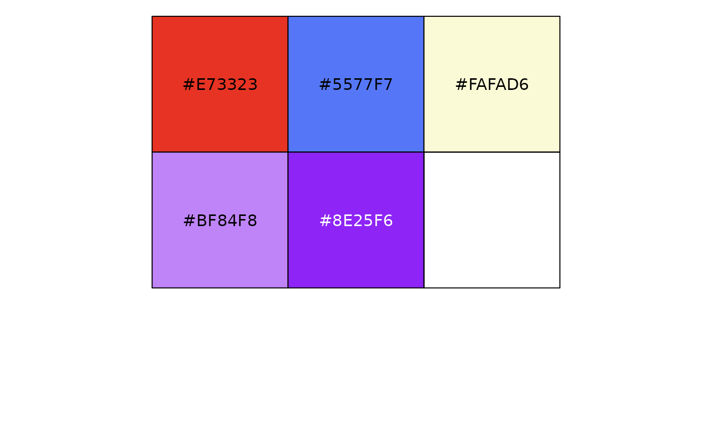

Palettes can also be loaded by name directly (see "Other colors" below).
cpr_make_pal(name, type)Character vector of length 1; name of palette to select. Must be one of 'mishler2014', 'canaper1', 'canaper2', 'canaper3', or 'canaper4'
Character vector of length 1; type of palette to select. Must be one of 'endem' (endemism) or 'signif' (p-rank significance)
Named character vector; color hex codes
Palettes with the name 'mishler2014' correspond to colors used in Mishler et al. 2014. This color scheme has been widely used to show CANAPE results, but some colors may not be distinguishable to people with color vision deficiency (CVD).
Palettes with the name 'canaper1' or 'canaper2' are based on the Okabe-Ito palette (endemism; Okabe & Ito 2002) or RColorBrewer (significance) and should be CVD-friendly.
Names of colors correspond to either endemism type or
p-rank output by cpr_classify_endem() or cpr_classify_signif(),
respectively. Not all names are all available for both types.
Mishler, B., Knerr, N., González-Orozco, C. et al. (2014) Phylogenetic measures of biodiversity and neo- and paleo-endemism in Australian Acacia. Nat Commun, 5: 4473. doi:10.1038/ncomms5473
Okabe, M., & Ito, K. (2002) Color Universal Design (CUD) - How to make figures and presentations that are friendly to Colorblind people. J*FLY Data Depository for Drosophila Researchers. https://jfly.uni-koeln.de/color/
cpr_make_pal("mishler2014", "endem")
#> neo paleo not significant mixed super
#> "#E73323" "#5577F7" "#FAFAD6" "#BF84F8" "#8E25F6"
cpr_make_pal("canaper1", "endem")
#> paleo neo not significant mixed super
#> "#0072B2" "#D55E00" "#FFFFCC" "#009E73" "#F0E442"
scales::show_col(cpr_make_pal("mishler2014", "endem"))
